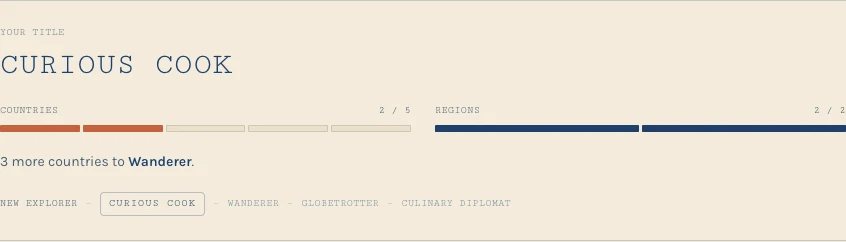
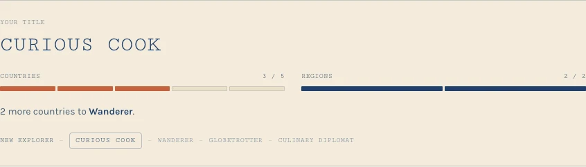

The rank is the section of today's journal that gives you a title (New Explorer, Curious Cook, Wanderer, Globetrotter, Culinary Diplomat) and shows how close the next one is. Tiers need both countries and regions, so it has two meters. The Folio journal you picked has no rank. Use the Tweak panel to try it off, restyled as it is today, or folded into the Folio page in four quieter ways. "Preview a cook at" is only for checking: the real journal moves through those stages by itself as recipes get cooked.


It sits between the log and the "Journey so far" recap. Set in the monospace stamp face, with a segment per country and per region needed. A new cook never sees it: an empty journal shows only the masthead and one line.